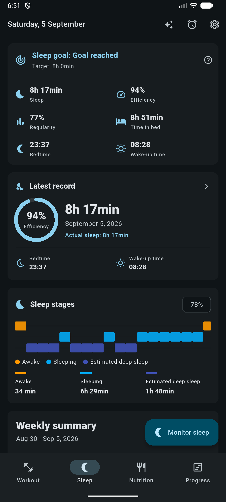

Two ways to record a night
- By hand
- Date, time asleep, optional actual sleep time, bedtime, wake time and a comment. Works on every platform and needs no permissions.
- Monitored
- Android runs a foreground service through the night and produces a full session with stage estimates, efficiency, latency and awakening counts.
Monitoring, alarms and wake-up missions are native Android features. On other platforms the sleep screens fall back to manual entries and the dashboard still works from those.
Starting a monitored night
Choose a mode when you start:
- Monitoring only: no alarm, just the night's record.
- Alarm: monitoring plus a wake-up time.
- Alarm with a mission: the alarm will not stop until you scan a barcode you chose in advance.
Snoozes are limited to a number you set (0 to 10, default 3). Choosing an alarm mode without a time, or a mission mode without a configured barcode, is rejected up front with a clear reason rather than failing at 3 a.m. You can change the alarm while monitoring is already running, stop the session, or discard it entirely.
How stages are estimated
This is an estimate produced from acoustic and motion aggregates, and the app labels it as such. It is not a clinical sleep study.
What the analysis reads
The Android service computes per-window aggregates as the night goes (frequency band energies, spectral flatness, a breathing-regularity measure, and motion and micro-motion figures), and persists those. The stage engine consumes only that. It never looks at raw audio, and no recording is kept.
The algorithm
- The night is divided into 30-second epochs classified into three states: awake, sleeping and deep.
- A small linear scorer weighs the features: noise level, bursts, high- and low-frequency energy, motion, micro-motion, breathing regularity and tonality.
- Those scores pass through a three-state Viterbi smoothing pass with sleep-architecture priors: no deep sleep immediately after onset, deep sleep concentrated in the first half of the night, and realistic dwell times in each state.
- Guards clean up the edges: an awake bias over the first eight minutes, a terminal awake guard for the last minute and a half, and no deep sleep in the first twenty minutes.
Finding the sleep window
Sleep onset is the first sustained asleep stretch after the cold-start guard, a clear majority of a run of consecutive windows. Final wake is the last sustained awake stretch inside the final third of the session. Everything outside that window is relabelled awake, so half an hour of reading in bed does not get counted as sleep.
confidence = 0.55 × posterior + 0.25 × margin + 0.20 × signal quality
Reported with every session, and no staging is produced at all below ten
scorable epochs. A low confidence night is a night to read loosely.
What a session stores
- Time in bed, quiet minutes, noisy minutes and estimated sleep minutes
- Minutes awake, sleeping, deep and unknown, plus awakening count
- Sleep onset, final wake and sleep latency
- Sleep efficiency and the stage confidence above
- Noise event count and a signal quality score
- How the session ended, and how the alarm was dismissed
- The algorithm version that produced the labels
Finished native recordings are imported into the database when you reopen the app; sessions that never finished are marked as interrupted rather than silently dropped. A failed database write leaves the native copy intact so it can be retried.
The sleep dashboard

| Metric | Meaning |
|---|---|
| Recorded vs actual | Time in bed against estimated sleep, averaged over 7 and 30 days |
| Efficiency | How much of the time in bed was spent asleep, over 7 and 30 days |
| Regularity | How consistent your schedule is, reported with the number of nights it is based on |
| Range | Shortest and longest night in the last 30 days |
| Coverage | How many of those days actually have a record |
The nightly sleep target is stored in 15-minute increments. It is a personal preference used to draw the goal ring, not a clinical recommendation.
Standalone alarms
Alarms are independent of sleep monitoring. They live in the app database and are mirrored to Android, which owns the ringing and the repeat schedule while the app is closed.
- Time and repeat
- Hour and minute, plus weekdays. No weekdays selected means a one-shot alarm.
- Snooze
- Enabled per alarm, with a snooze length and a maximum number of snoozes. Global defaults exist for both.
- Mission
- Requires scanning your chosen barcode to dismiss. Only available once a mission has been configured.
- Next trigger
- Computed and shown so you can confirm the schedule is what you meant.
Because the database write is what defines the alarm, a platform channel hiccup never makes the editor report failure. When you reopen the app it reconciles: schedules created natively while the app was closed are picked up, and alarms in the database that have no native schedule are rescheduled.
Only a salted hash and the code format are saved. That is enough to verify the right code was scanned and not enough to reconstruct it, so a backup or a database dump cannot reveal which product is sitting on the far side of your bedroom.
Where sleep data shows up
- The Wellness tab of Progress, alongside training feeling and body weight.
- Periodization phases can set an average sleep target, with adherence and coverage reported per phase and per week.
- The AI Coach can read summaries, a specific night, your history and your sleep profile, and can cross-reference sleep against training performance.
Sleep stages, efficiency and latency here are estimates from microphone and motion aggregates. If you suspect a sleep disorder, that is a conversation for a clinician, not for a phone in your bedroom.